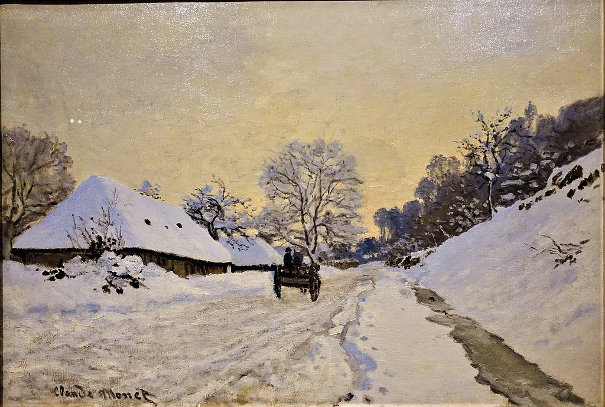

<head>
<meta charset="UTF-8" />
<meta name="keywords" content="drawing, painting" />
<meta name="description" content="drawings by Sunjy" />
<title>Sunjy</title>
<link rel="shortcut icon" type="image/x-icon" href="../../mImages/mCommon/favicon.ico" media="screen" />
<link rel="stylesheet" type="text/css" href="../../mCsses/mCommon/mCssA.css" />
<link rel="stylesheet" type="text/css" href="../../mCsses/mCommon/mCssB.css" />
<link rel="stylesheet" type="text/css" href="../../mCsses/mCommon/mCssC.css" />
<link rel="stylesheet" type="text/css" href="../../mCsses/mCommon/mCssD.css" />
<link rel="stylesheet" type="text/css" href="../../mCsses/mContent/mCssA.css" />
<link rel="stylesheet" type="text/css" href="../../mCsses/mContent/mCssB.css" />
<link rel="stylesheet" type="text/css" href="../../mCsses/mContent/mCssC.css" />
<link rel="stylesheet" type="text/css" href="../../mCsses/mContent/mCssD.css" />
</head>
<script type="text/javascript" src="../../mScripts/mContent/mContentAA.js" /></script>
<script type="text/javascript" src="../../mScripts/mContent/mContentAB.js" /></script>
<script type="text/javascript" src="../../mScripts/mContent/mContentAC.js" /></script>
<script type="text/javascript" src="../../mScripts/mContent/mContentAD.js" /></script>
<script type="text/javascript"></script> 
<script type="text/javascript">
document.write('<div class="mImgAbsolute"></div>');
/*
document.write('<p class="mFontSizeBColor" />From a white paper...</p>');
document.write('<table class="center"><tr><td>');
document.write('');
document.write('</td></tr></table>');
*/
</script>


<script type="text/javascript">
document.write('<p class="mFontSizeBColor" />A Cart on the Snowy Road at Honfleur</p>');
document.write('<p class="mFontSizeSColor" />“A Cart on the Snowy Road at Honfleur” by Claude Monet depicts a cart on the snowy road at Honfleur, in northern France’s Normandy region.<br><br>This painting illustrates how Monet was influenced by Japanese prints and how he integrated what he had learned from the study of Japanese art into this scene. <br><br>Claude Monet realized that painting could most effectively evoke the required atmosphere if it relied on the viewer’s ability to interpret the basic signs from their relationships to the whole picture.<br><br>Monet’s painting shows many instances of how Monet used abstraction, similar to that found in Japanese art as an alternative to naturalistic detail. <br><br>Painting landscapes under snow allowed Monet to study light effects and to use different nuances of color. He experimented with using a limited number of shades, preferring browns and blues.<br><br>The colors were used in many different shades so that the ground is not uniformly white but with a luminosity that seems to change when seen from different angles.<br></p>');
document.write('<table class="center" /><tr><td>');
document.write('<br>This painting illustrates how Monet was influenced by Japanese prints and how he integrated what he had learned from the study of Japanese art into this scene. <br><br>Claude Monet realized that painting could most effectively evoke the required atmosphere if it relied on the viewer’s ability to interpret the basic signs from their relationships to the whole picture.<br><br>Monet’s painting shows many instances of how Monet used abstraction, similar to that found in Japanese art as an alternative to naturalistic detail. <br><br>Painting landscapes under snow allowed Monet to study light effects and to use different nuances of color. He experimented with using a limited number of shades, preferring browns and blues.<br><br>The colors were used in many different shades so that the ground is not uniformly white but with a luminosity that seems to change when seen from different angles.<br>" />');
document.write('</td></tr></table>');
</script>


